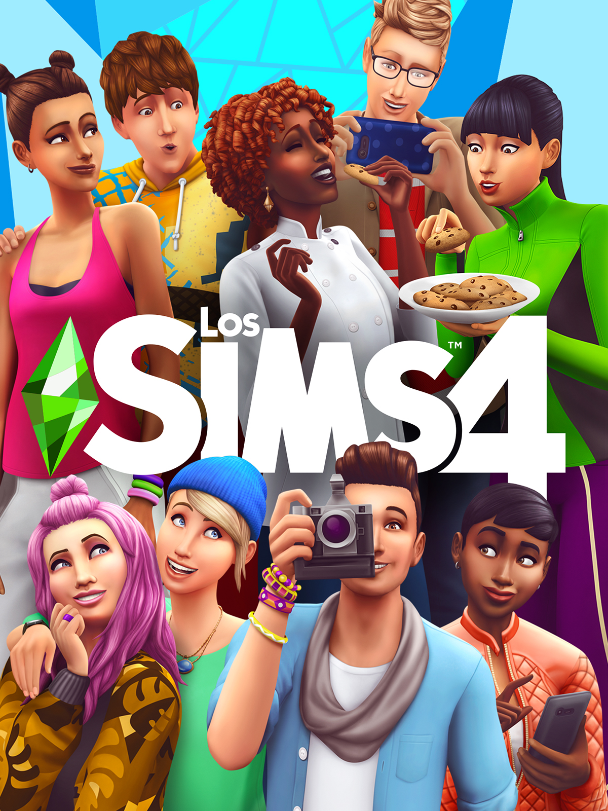
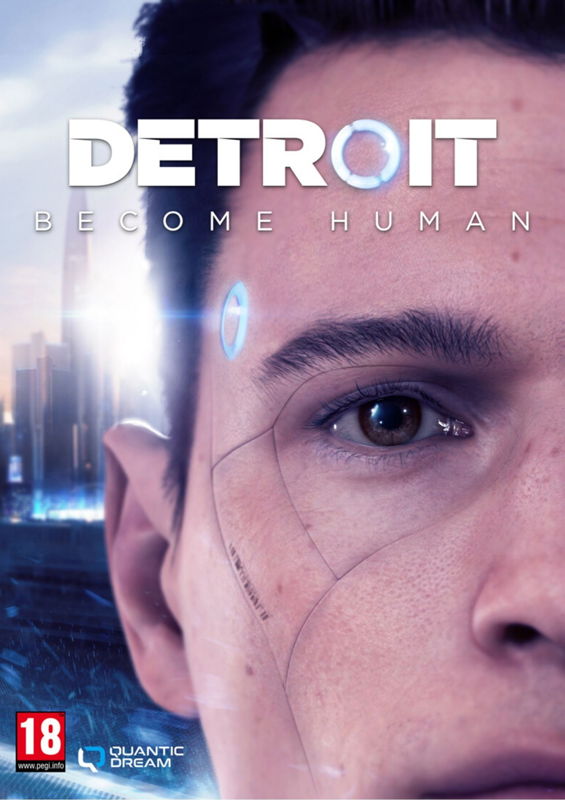
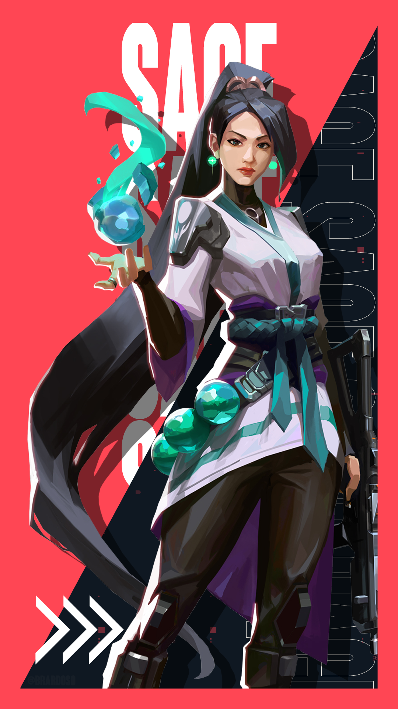
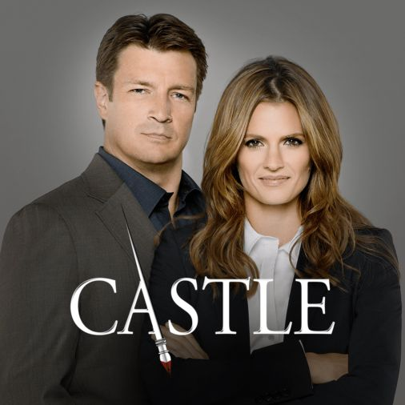
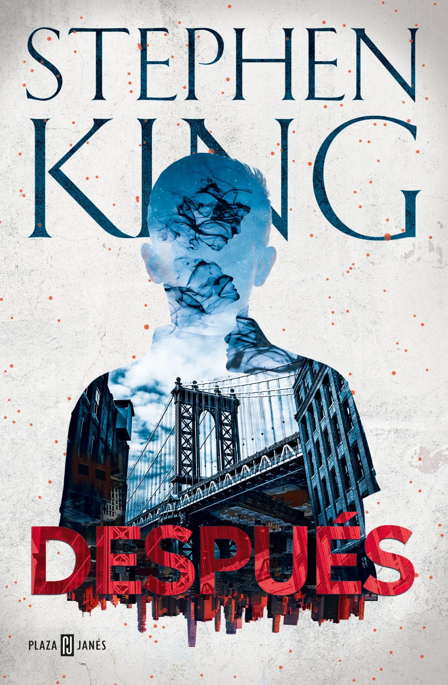
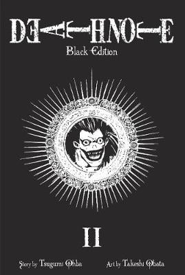
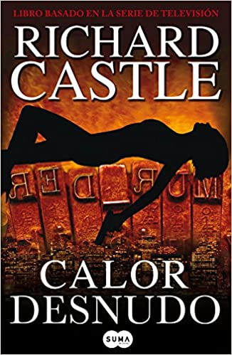
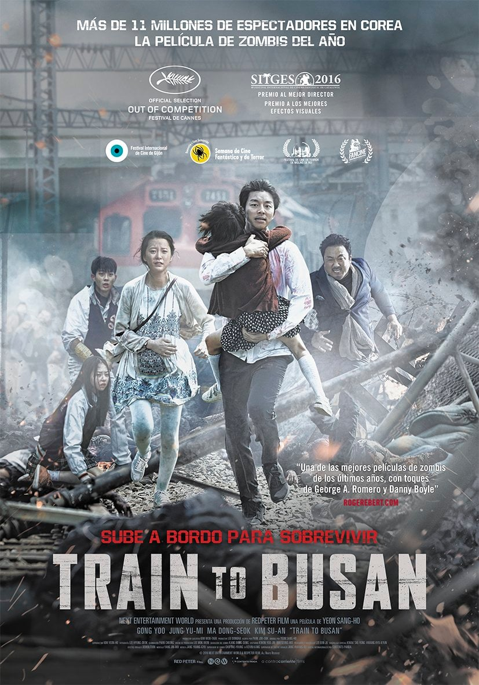
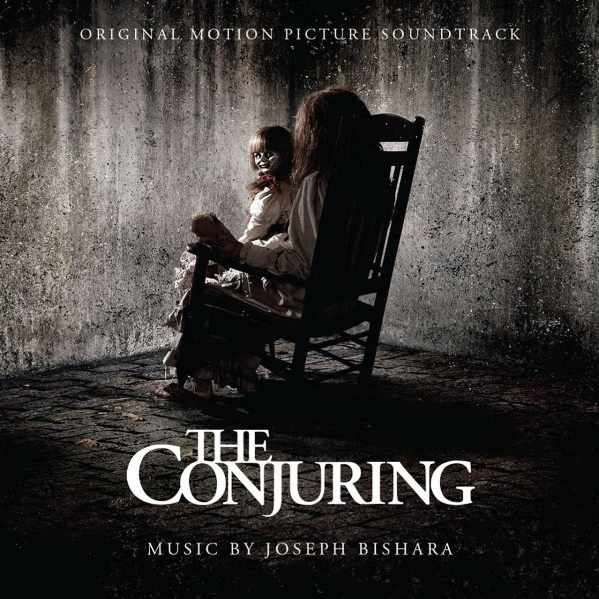

-HOBBIES-
-VIDEOJUEGOS-
Sims4
Este juego es literalmente mi infancia, tengo 10.000 horas de juego solo construyendo o creando personajes, por esto lo considero de mis favoritos
Detroit Become Human
Los juegos de Quantic Dream me gustan demasiado, me divierto mucho con ellos por su alta posibilidades de cambiar la historia, por las decisiones y me lo paso muy bien jugando el juego tomando cada vez una decisión diferente para ver como se altera la historia
Valorant
Siendo un juego de Rito Games le he metido mucha pasta y he dejado mucha cordura ahí dentro, yo ya no sé si es favorito o es obsesión
-SERIES-
Castle
Sinceramente, Castle es una de las mejores series de homicidios, tiene casos fascinantes y sinceramente la actriz, Stana Katic me encanta como actúa y lo buena que es en lo suyo, me he visto la serie 8 veces una vez por año y sinceramente seguiré viéndola cada año sus 8 temporadas completas, aunque me sepa el diálogo de memoria
El Mentalista

El mentalista podría considerarla también una muy buena serie de homicidios, no me gusta tanto como Castle, pero también la he visto 3 o 4 veces, en esta serie me gusta el carácter del protagonista masculino, Patrick Jane es un bromista y le encanta vacilar a la inspectora y a sus compañeros con sus habilidades de observación, por lo que la manera en la que resuelve los casos es fascinante
He is Psychometric

He is Psychometric es una serie coreana de un chico que colabora con una chica policía y la ayuda a resolver casos con su habilidad de ver el pasado y analizar las cosas, con esta serie llore por la trama tan intensa, que sinceramente eso los coreanos lo hacen muy bien
-LIBROS-
Después
En general los libros de Stephen King me encanta leerlos, he puesto el de Después porque es el último libro que me leí de él y me encanto el giro de la trama, en sí cualquier libro de terror o policiaco me encanta y lo disfruto mucho
Death Note
Death note es un manga que me gusta mucho, más que el anime tengo todos los mangas y sus libros de antes de la death note u otras historias de la death note
Castle
Castle, también tiene libros, básicamente la serie, el protagonista masculino es un escritor, pues los directores de Castle decidieron sacar los libros a la luz para que los fans los leyéramos y todos los libros están medio basados en la serie, son casos de la serie y los personajes del libro tienen la misma relación que los protagonistas de la serie
-PELÍCULAS-
Train to Busan
Train to Busan es una película coreana de zombies que pasa en un tren de corea la gran parte del tiempo, el actor principal, el padre, conmovió a la gran mayoría de personas que vieron la película y se hizo más conocido debido a esta
El Conjuro
Ya sea el conjuro de los Warren o cualquier película de terror bien hecho, la disfruto mucho, me lo paso bien y me encanta verlas, suelo ver más ese tipo de películas que cualquier otra
Avengers - Marvel

Cualquier película de los Avengers o de Spider-Man me encanta verlas, obviamente acabo mirándome e informándome de todas las películas Marvel, pero principalmente voy 100% al cine a ver Spider-Man y los Avengers